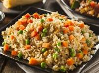

Fried Rice

Description
Late to work? or do you just want a fast and fufiling meal? Then, this simple recipe will fill you up
Ingredients
- 2/3 cup of chopped baby carrots
- 1/2 cup of frozen green peas
- 2 tablespoons of vegetable oil
- 1 clove of garlic, minced
- 2 large eggs
- 3 cups of leftover white rice
- 1 tablespoon of soy sauce
- 2 teaspoons of seasame oil
Steps
- Place the carrots in a small saucepan and fill with water. Boil at low intensity for about 3 to 5 minutes. Add peas and stir them,then drain in a colander immediately.
- Heat a pan over high intensity heat. Add vegetable oil, and stir in carrots, peas, and garlic. Cook for about 30 seconds. Add eggs, and then, stir quickly to make scramble eggs with vegtetables
- Stir in cooked rice. Add soy sauce and toss the rice in order to coat it with the suace. Drizzle with seasame oil and toss again.
Home